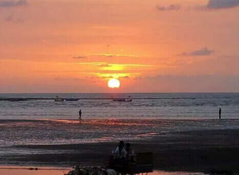

Alibaug

Introduction
Alibaug is a **coastal town** in Maharashtra, India, known for its **scenic beaches, historic forts, and vibrant culture**. Located approximately **96 km from Mumbai**, Alibaug is a popular weekend getaway offering a mix of relaxation and adventure.
History
Alibaug was developed in the 17th century by **Kanhoji Angre**, the admiral of the Maratha Navy. The region was strategically important due to its location along the Arabian Sea and was fortified with strong defenses.
Major Attractions
1. Alibaug Beach
Famous for its **black sand shoreline**, Alibaug Beach offers stunning sunset views and water sports activities.
2. Kolaba Fort
A historic **17th-century fort** located in the Arabian Sea, accessible during low tide. It was a crucial naval base for the Maratha Empire.
3. Nagaon Beach
A clean and serene beach perfect for swimming and jet skiing.
4. Murud-Janjira Fort
A famous **sea fort**, known for being **unconquered**, even by the Marathas and the British.
5. Kashid Beach
Located near Alibaug, Kashid Beach is known for its **white sands and clear blue waters**.
Significance
Alibaug is a blend of **history, nature, and adventure**, making it a perfect tourist destination.
✔️ **Historical Importance**: Once a major naval base under the Marathas.
✔️ **Tourism & Leisure**: A peaceful retreat from city life.
✔️ **Water Sports**: Jet skiing, parasailing, and boating are popular activities.
Visitor Information
Location: Alibaug, Maharashtra, India
Best Time to Visit: November to February (Cool and pleasant climate)
How to Reach
Alibaug is accessible via **ferry from Mumbai** (Gateway of India to Mandwa Jetty), followed by a short drive.
The nearest railway station is **Pen**, about 30 km from Alibaug.
State transport buses and private taxis connect **Mumbai, Pune, and other cities** to Alibaug.
A scenic road trip via **Mumbai-Goa Highway (NH-66)**.
Location
More Information
For more details, visit these websites:
Gallery